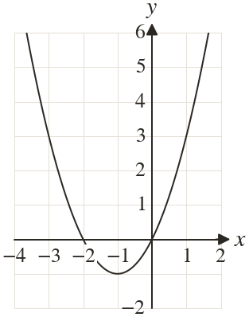
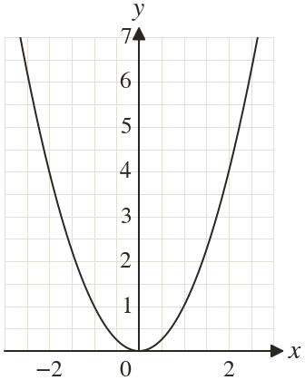
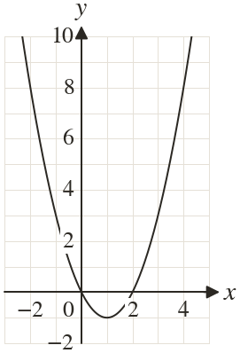

Westonbirt Maths · Quadratics and Their Graphs
Solving Equations from Graphs
Name: ______________________ Date: ____________
1
The graph of is drawn. Draw a line to solve

2
The graph of is drawn. Draw a line to solve to d.p.

3
To solve from the graph of Jo draws the line
What is her mistake? Give the solutions.
What is her mistake? Give the solutions.
4
A graph of is drawn. Which line solves ? The solutions are whole numbers. Find them.
5
meets at and
Solve
Solve
Ext
Using the graph of which line solves ? Find the solutions.
